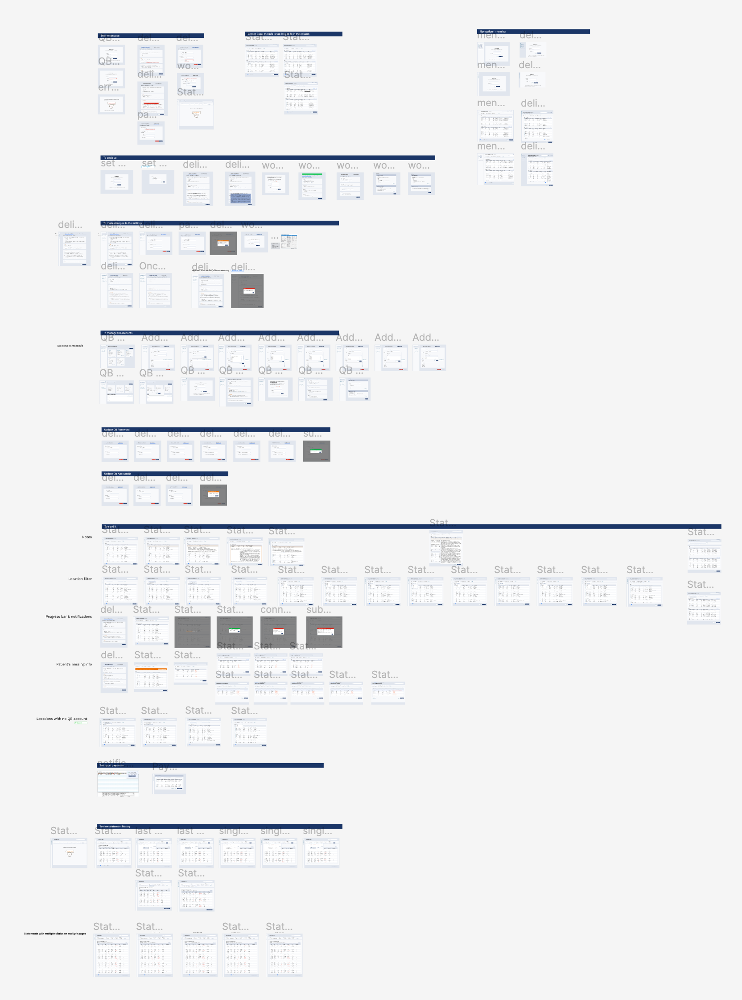

SaaS Product Statements Management Tool
 Duration: 5 months so far
Duration: 5 months so far
 Tools: MS Team, Usertesting.com, Figma
Tools: MS Team, Usertesting.com, Figma
 My Roles: User Research, Design, Prototyping
My Roles: User Research, Design, Prototyping
Currently, enterprise users lack an electronic option to deliver statements to their patients, limiting them to traditional mailing services. They have to pay for a 3rd party vendor to generate the statement and then send the statement to the patient through USPS. This is not an efficient way for them to handle statements. Also, it is a waste of paper and not environment friendly.
The team consists of a product manager and me, serving as the UX designer. During our initial discussions, we realized that we lacked a comprehensive understanding of our users' requirements for the tool. As a result, we decided to conduct user research to gain valuable insights.
After reviewing the PM's high-level user stories and familiarizing myself with the tool's functionality, I developed a user interview script to facilitate our understanding of the user's needs. Subsequently, we reached out to a group of enterprise users who were willing to provide us with feedback. During our conversations with four users, we focused on inquiries regarding:
- How often do you need to send statements to the patient?
- When do you usually send out the statements?
- Can you walk us through the steps you took to send the staement to the patient?
- How many people are responsible for sending out statements to the patient in your office?
After conducting interviews with all users, we discovered that once they were ready to send statements, they typically did not spend much time reviewing the details of each individual statement, as this had already been done during the auditing stage. Instead, they would send the statements in bulk as a batch, which could often include thousands of statements.
Furthermore, we learned that the users did not have a method to confirm whether the patient had a valid communication method on file prior to sending out the statement. As a result, they would send out the statement without knowing whether the patient had ever received it.
Due to project confidentiality, I won't show detailed design but here is a list of main features included in the design:
- The user will be able to set up and manage the account needed for sending statements eletronically;
- The user will be able to manage clinics linked to each account;
- The user will be able to identify users with missing contact info and add the missing info;
- Before sending out the statement, the user will be able to view statements in different ways by using the filters provided;
- The user will be able to import online payments;
- The user will be able to view statement history;
- The user will be able to identify the most effect delivery method to get patients to make a payment.
